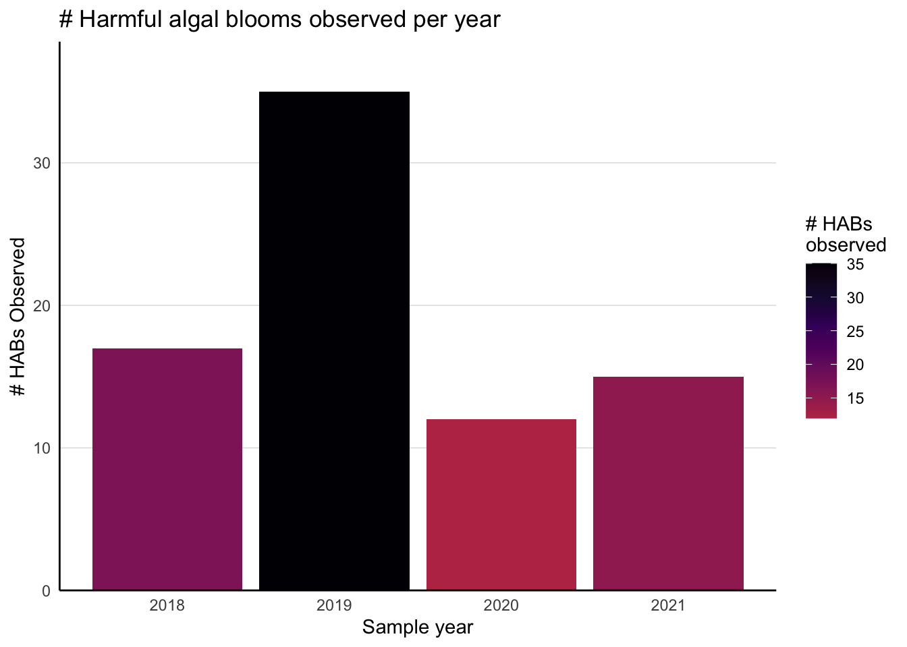
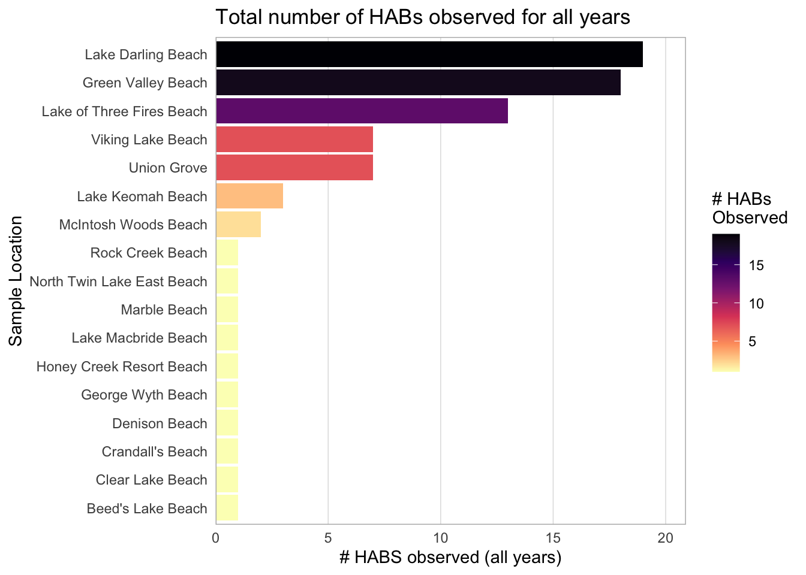
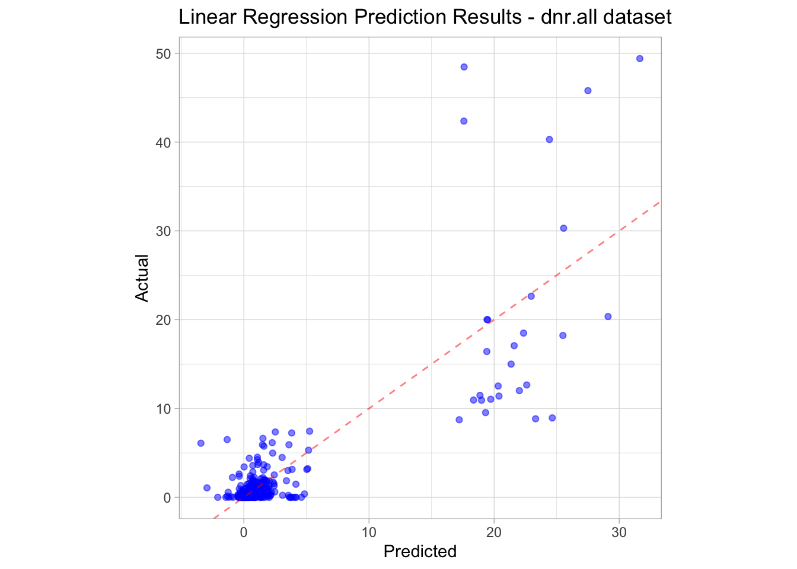
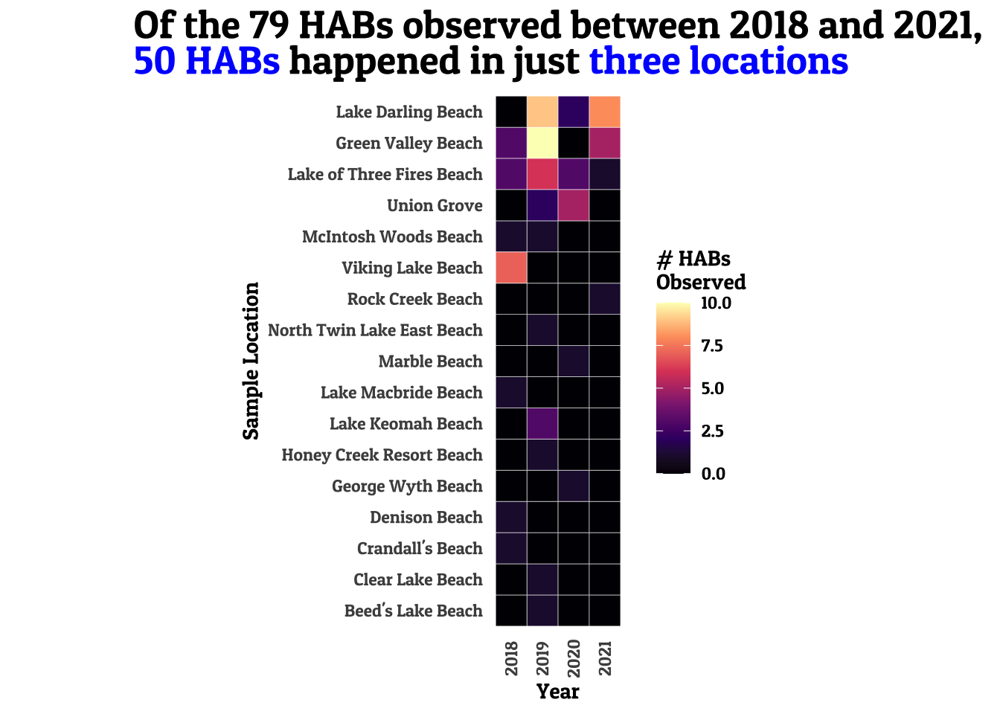

Beginning Predictions
In this meeting, we’ll train our first model and see how to gather metrics and predictions. First, let’s go over the homework from last time.
Homework from last time
There were three “homework questions” from last time:
- Repeat the EDA and visualizations for the 2019 data set.
- Commit and push your changes
- Combine the 2019 and 2020 datasets.
The first two are pretty straightforward, so I’ll cover how to combine the 2018-2021 datasets. It’s important that we combine the datasets correctly as this dataset is what we’ll be using going forward in these meetings.
Combining the datasets
Before we get started, let’s check out the other spreadsheets. We already saw what was in the 2018 data, but let’s open the Excel spreadsheets for the other datasets to see how straightforward combining the datasets will be.
After opening up the datasets, here are the primary issues facing us:
- Columns have different names between the different datasets. For example, the Microcystin measurement is labeled “Microcystin RAW Value [ug/L]” in the 2018 data set but is called “Microcystin” in all of the other data sets. Another example is that the gene copy numbers of the various mcyA species (mcyA P/M/A) are labeled a few different ways.
- Not all columns are shared between datasets. This is most obvious when comparing the 2021 dataset versus the other years.
With these in mind, our plan of attack will be, for each data set:
- Select only those columns that appear in the 2021 dataset
- Convert column names to a standard set of names
- Add a year column
After we do all of these steps, we’ll concatenate all of the datasets together.
Note that this is just one way to handle this problem. Another solution might be to use all of the columns for all years and impute the missing data for the missing columns, or to select a learning algorithm that can handle the missing data. However, doing so introduces more uncertainty into the model we’ll use down the line, and so this particular method was chosen because…
2021 Data
Anyway, let’s start by reading in the 2021 data since we’ll only be using columns found for that year. After reading in the data, we’ll call clean_names and filter out any samples without a collected_date.
library(tidyverse)
library(readxl)
library(janitor)
dnr.2021 <- read_xlsx("data/IowaDNR_2021_Data_Merged.xlsx") %>%
clean_names() %>%
filter(!is.na(collected_date))dnr.2021 %>%
colnames() [1] "label" "collected_date" "environmental_location"
[4] "microcystin" "tkp" "ortho_p"
[7] "tkn" "p_h" "dissolved_oxygen_mg_l"
[10] "x16s" "am" "ap"
[13] "aa" Most of these columns look fine, but let’s change the mcy variable names from ax to mcy_a_x to be more descriptive (with the added benefit of matching how clean_names parses these columns in the other datasets). There are a couple ways we can do this, but I’ll be using the rename function here:
dnr.2021 <- dnr.2021 %>%
rename(
mcy_a_m = am,
mcy_a_p = ap,
mcy_a_a = aa
)
dnr.2021 %>%
colnames() [1] "label" "collected_date" "environmental_location"
[4] "microcystin" "tkp" "ortho_p"
[7] "tkn" "p_h" "dissolved_oxygen_mg_l"
[10] "x16s" "mcy_a_m" "mcy_a_p"
[13] "mcy_a_a" Finally, we need to take care of is type of pH. Because there are row values of No Data in the spreadsheet it comes from, the p_h column gets read in as a character variable. Let’s mutate this column to using as.numeric:
dnr.2021 <- dnr.2021 %>%
mutate(p_h = as.numeric(p_h)) Warning in mask$eval_all_mutate(quo): NAs introduced by coercionGreat! We now know what we want the names of our columns to be and we’re ready to repeat this process for the other data sets. Let’s revisit the 2018 data.
2018 Data
Let’s start by looking at our column names:
dnr.2018 <- read_xlsx("data/IowaDNR_2018_Data_Merged.xlsx") %>%
clean_names() %>%
filter(!is.na(collected_date))dnr.2018 %>%
colnames() [1] "sample_id" "environmental_location"
[3] "collected_date" "microcystin_raw_value_ug_l"
[5] "p_h" "doc_ppm"
[7] "tkp_mg_p_l" "tkn_mg_n_l"
[9] "nh3_mg_n_l" "n_ox_mg_n_l"
[11] "no2_mg_n_l" "cl_mg_cl_l"
[13] "so4_mg_so4_l" "x16s_r_rna_gene_copies_m_l"
[15] "microcystismcy_a_gene_copies_m_l" "aanabaenamcy_a_gene_copies_m_l"
[17] "planktothrixmcy_a_gene_copies_m_l"The ideal situation is that all the column names match exactly and we can just use any_of to get those columns from this data frame. However, when we try that, we see that we still have some work to do:
dnr.2018 %>%
select(any_of(colnames(dnr.2021)))# A tibble: 539 × 3
collected_date environmental_location p_h
<dttm> <chr> <dbl>
1 2018-05-22 11:19:00 Backbone Beach 8.1
2 2018-06-19 09:00:00 Backbone Beach 8.8
3 2018-08-21 13:00:00 Backbone Beach 8.9
4 2018-07-10 11:15:00 Backbone Beach 8.2
5 2018-08-28 12:30:00 Backbone Beach 8.8
6 2018-08-14 10:30:00 Backbone Beach 8
7 2018-08-07 11:10:00 Backbone Beach 7.7
8 2018-07-24 12:00:00 Backbone Beach 8.9
9 2018-07-31 11:25:00 Backbone Beach 8.5
10 2018-07-02 11:15:00 Backbone Beach 7.9
# … with 529 more rowsWe’re missing a lot of columns here. Let’s do another rename step here before our select step:
dnr.2018 <- dnr.2018 %>%
rename(
microcystin = microcystin_raw_value_ug_l,
tkp = tkp_mg_p_l,
tkn = tkn_mg_n_l,
x16s = x16s_r_rna_gene_copies_m_l,
mcy_a_m = microcystismcy_a_gene_copies_m_l,
mcy_a_p = planktothrixmcy_a_gene_copies_m_l,
mcy_a_a = aanabaenamcy_a_gene_copies_m_l
) %>%
select(any_of(colnames(dnr.2021)))
dnr.2018 %>%
head()# A tibble: 6 × 10
collected_date environmental_locati… microcystin tkp tkn p_h x16s
<dttm> <chr> <dbl> <dbl> <dbl> <dbl> <dbl>
1 2018-05-22 11:19:00 Backbone Beach 0.63 1.61 0.66 8.1 1.47e5
2 2018-06-19 09:00:00 Backbone Beach 0.46 1.06 0.517 8.8 4.23e2
3 2018-08-21 13:00:00 Backbone Beach 0.438 1.06 0.169 8.9 4.04e7
4 2018-07-10 11:15:00 Backbone Beach 0.425 1.22 0.505 8.2 1.08e7
5 2018-08-28 12:30:00 Backbone Beach 0.418 1.02 1.14 8.8 7.65e6
6 2018-08-14 10:30:00 Backbone Beach 0.405 1.15 0.298 8 4.46e7
# … with 3 more variables: mcy_a_m <dbl>, mcy_a_p <dbl>, mcy_a_a <dbl>Much better. Note that there are some missing columns here because there are columns in the 2021 dataset that don’t exist in the 2018 dataset.
2019 Data
We’ll repeat this process for the 2019 dataset. Some notes:
clean_namesalready nicely formatted the mcyX columns- By default,
read_xlsxreads in the first sheet of thexlsxfile. This means that the 2019 data will only show the data on the first sheet. We want the data from the sheet labeled “combined”, so use thesheetargument ofread_xlsxto do this.
dnr.2019 <- read_xlsx("data/IowaDNR_2019_Data_Merged.xlsx",
sheet = "combined") %>%
clean_names() %>%
filter(!is.na(collected_date)) %>%
rename(
tkn = tkn_mg_n_l,
tkp = tkp_mg_p_l,
ortho_p = ortho_p_mg_p_l
) %>%
select(any_of(colnames(dnr.2021)))dnr.2019 %>%
head()# A tibble: 6 × 12
label collected_date environmental_l… microcystin tkp ortho_p tkn
<chr> <dttm> <chr> <dbl> <dbl> <dbl> <dbl>
1 6-21280… 2019-06-25 00:00:00 Backbone Beach 0 0.473 0.065 0.18
2 7-21280… 2019-07-01 00:00:00 Backbone Beach 0 0.023 0.034 0.282
3 8-21280… 2019-07-09 00:00:00 Backbone Beach 0.23 0.056 0.0401 0.346
4 9-21280… 2019-07-16 00:00:00 Backbone Beach 0.743 -0.005 0.023 0.365
5 10-2128… 2019-07-23 00:00:00 Backbone Beach 0.038 0.287 0.081 0.858
6 11-2128… 2019-07-30 00:00:00 Backbone Beach 0.105 0.199 0.22 1.18
# … with 5 more variables: p_h <dbl>, x16s <dbl>, mcy_a_m <dbl>, mcy_a_p <dbl>,
# mcy_a_a <dbl>2020 Data
Pretty much the same process as above, though we need to cast the ortho_p, tkn, and tkp columns as a numeric to account for places where the text value “NA” is entered:
dnr.2020 <- read_xlsx("data/IowaDNR_2020_Data_Merged.xlsx") %>%
clean_names() %>%
filter(!is.na(collected_date)) %>%
rename(
tkp = tkp_mg_p_l,
tkn = tkn_mg_n_l,
ortho_p = ortho_p_mg_p_l
) %>%
mutate(
across(c(ortho_p, tkn, tkp), ~ as.numeric(.))
) %>%
select(any_of(colnames(dnr.2021)))Warning in mask$eval_all_mutate(quo): NAs introduced by coercion
Warning in mask$eval_all_mutate(quo): NAs introduced by coercionPutting it all together
Since we did all of the cleaning ahead of time, combining the columns now will be straightforward using bind_rows. Let’s save this to a new variable called dnr_all:
dnr.all <- bind_rows(
dnr.2018,
dnr.2019,
dnr.2020,
dnr.2021
)Notice that there were a lot of redundant steps across all of the DNR sets. For each data set, we:
- Read in the Excel spreadsheet
- Called
clean_names - Filtered
nadates - Renamed some columns
- Selected the columns that match the names of the 2021 dataset.
Ideally, we would have written a function to handle all of the redundant tasks. For example, we could have written a function read_dnr_sheet that takes in a file path, reads in the Excel sheet, calls clean_names, filters na dates, renames columns, and selects only those columns that match those from the 2021 data.
So yes, it would have been nice to write functions. However, the problem is that the data sheets are all just different enough that this isn’t exactly quite worth the effort. For instance, the 2019 data requires the sheet argument, which complicates the potential function definition. Similarly, the column names that are required to be renamed don’t quite match up between the different years, and so would require an additional argument.
Some brief EDA
Before we jump into predictions, let’s do some quick visualizations. First, let’s create the hazard_class column to record whether or not the microcystin concentration was over 8 ug/L for that observation, as well as a year column so we can separate the samples by the year they were collected in. Finally, we’ll remove observations that don’t have a valid hazard class:
library(lubridate)
dnr.all <- dnr.all %>%
mutate(
hazard_class = if_else(microcystin > 8, "hazardous","safe"),
year = year(collected_date),
dissolved_oxygen_mg_l = as.numeric(dissolved_oxygen_mg_l)
) %>%
filter(!is.na(hazard_class))How many hazardous cases were there per year?
theme_set(theme_light())
dnr.all %>%
filter(hazard_class == "hazardous") %>%
count(year) %>%
ggplot(aes(year, n, fill = n)) +
geom_col() +
scale_fill_viridis_c(option = "inferno", direction = -1, end = 0.5) +
labs(
x = "Sample year",
y = "# HABs Observed",
title = "# Harmful algal blooms observed per year",
fill = "# HABs\nobserved"
) +
theme(
panel.grid.minor = element_blank(),
panel.grid.major.x = element_blank(),
panel.border = element_blank(),
axis.line.x = element_line(color = "black", size = 0.5),
axis.line.y = element_line(color = "black", size = 0.5),
axis.ticks = element_blank()
) +
scale_y_continuous(
expand = expansion(mult = c(0, 0.1), add = 0)
) 
Which locations had the most harmful algal blooms?
dnr.all %>%
filter(hazard_class == "hazardous") %>%
count(environmental_location) %>%
mutate(environmental_location = fct_reorder(environmental_location, n)) %>%
ggplot(aes(n, environmental_location, fill = n)) +
geom_col() +
labs(
x = "# HABS observed (all years)",
y = "Sample Location",
title = "Total number of HABs observed for all years",
fill = "# HABs\nObserved"
) +
scale_fill_viridis_c(option = "magma", direction = -1) +
theme(
panel.grid.minor = element_blank(),
panel.grid.major.y = element_blank(),
axis.ticks = element_blank()
) +
scale_x_continuous(
expand = expansion(mult = c(0, 0.1), add = 0)
) 
Intro to Tidymodels
Up until now, we’ve just been doing EDA stuff. Now that we’ve done some of that, we can get started with modeling. For this series, we’re going to use tidymodels to keep our prediction workflows organized and reproducible.
The tidymodels framework is “a collection of packages for modeling and machine learning using tidyverse principles.” The tidymodels website has several tutorials to introduce you to the fundamentals of working with tidymodels. Today, we’re going to use the tidymodels framework to:
- Split our data
- Perform some preprocessing
- Train a linear model
- Visualize some metrics
Splitting the data, preprocessing
We begin by splitting our data into testing and training splits:
library(tidymodels)
set.seed(489)
data_split <- initial_split(dnr.all, strata = "hazard_class")
training_data <- training(data_split)
testing_data <- testing(data_split)Next, we create a recipe. A recipe is a series of data processing steps to perform on our data before we feed it into our model. Here, the only steps we’ll take is to remove non-informative variables and to impute some missing values by filling in the mean.
hab_recipe <- recipe(microcystin ~ ., training_data) %>%
step_rm(collected_date, label) %>%
step_impute_mean(all_numeric())We can take a look at the preprocessed data set by using the prep and juice functions. prep will perform the steps outlined in the pre-processing recipe. For example, in our recipe above, it will calculate the mean of all the numeric columns. juice will then return the transformed dataset resulting from following all the steps in the recipe:
hab_recipe %>%
prep %>%
juice# A tibble: 1,193 × 13
environmental_loca… tkp tkn p_h x16s mcy_a_m mcy_a_p mcy_a_a ortho_p
<fct> <dbl> <dbl> <dbl> <dbl> <dbl> <dbl> <dbl> <dbl>
1 Backbone Beach 1.61 0.66 8.1 1.47e5 0 0 0 0.0430
2 Backbone Beach 1.06 0.517 8.8 4.23e2 0 0 0 0.0430
3 Backbone Beach 1.22 0.505 8.2 1.08e7 1240 0 0 0.0430
4 Backbone Beach 1.02 1.14 8.8 7.65e6 0 0 0 0.0430
5 Backbone Beach 1.15 0.298 8 4.46e7 0 0 0 0.0430
6 Backbone Beach 0.922 -0.24 7.7 2.66e7 0 0 0 0.0430
7 Backbone Beach 0.041 0.233 8.9 5.04e6 0 0 0 0.0430
8 Backbone Beach 0.491 0.264 8.5 1.09e7 432 0 0 0.0430
9 Backbone Beach 1.12 0.437 7.9 6.09e6 0 0 0 0.0430
10 Backbone Beach 1.22 0.569 7.28 4.44e6 0 0 0 0.0430
# … with 1,183 more rows, and 4 more variables: dissolved_oxygen_mg_l <dbl>,
# hazard_class <fct>, year <dbl>, microcystin <dbl>We see that the collected_date and label were removed, and the numeric columns had the missing data filled in with the column mean.
Creating and training a model
Now that we have our data preprocessing steps, we’ll create the model that we want to use to predict. To begin with, we’ll just use an lm model. We’ll indicate this to tidymodels using the linear_reg function.
linear_model <- linear_reg() %>%
set_engine("lm") %>%
set_mode("regression")
linear_modelLinear Regression Model Specification (regression)
Computational engine: lm This tells us that linear_model is a tidymodels object using the lm function to perform linear regression.
Now we can package the preprocessing recipe and the model into a workflow. Think of the workflow as a pipeline - a series of steps you want to carry out on the data.
lm_workflow <- workflow() %>%
add_recipe(hab_recipe) %>%
add_model(linear_model)
lm_workflow══ Workflow ════════════════════════════════════════════════════════════════════
Preprocessor: Recipe
Model: linear_reg()
── Preprocessor ────────────────────────────────────────────────────────────────
2 Recipe Steps
• step_rm()
• step_impute_mean()
── Model ───────────────────────────────────────────────────────────────────────
Linear Regression Model Specification (regression)
Computational engine: lm This shows us all of the preprocessing steps we’re going to carry out on the data as well as the model we’re going to use. We’re now ready to fit our model to the training data:
lm_fit <- lm_workflow %>%
last_fit(split = data_split)! train/test split: preprocessor 1/1, model 1/1 (predictions): prediction from a rank-defici...lm_fit# Resampling results
# Manual resampling
# A tibble: 1 × 6
splits id .metrics .notes .predictions .workflow
<list> <chr> <list> <list> <list> <list>
1 <split [1193/398]> train/test split <tibble> <tibble> <tibble> <workflow>
There were issues with some computations:
- Warning(s) x1: prediction from a rank-deficient fit may be misleading
Use `collect_notes(object)` for more information.The last_fit function takes the entire data split, performs the preprocessing and model training steps on the training set, then predicts on the testing set. There are several convenience functions we can use to interact with the lm_fit object. To start, we can collect the metrics via collect_metrics:
lm_fit %>%
collect_metrics# A tibble: 2 × 4
.metric .estimator .estimate .config
<chr> <chr> <dbl> <chr>
1 rmse standard 3.42 Preprocessor1_Model1
2 rsq standard 0.692 Preprocessor1_Model1We can also collect the predictions via collect_predictions:
lm_fit %>%
collect_predictions() # A tibble: 398 × 5
id .pred .row microcystin .config
<chr> <dbl> <int> <dbl> <chr>
1 train/test split 0.967 3 0.438 Preprocessor1_Model1
2 train/test split 0.661 13 0.153 Preprocessor1_Model1
3 train/test split 1.53 21 0.377 Preprocessor1_Model1
4 train/test split 2.12 23 0.195 Preprocessor1_Model1
5 train/test split 2.03 30 0 Preprocessor1_Model1
6 train/test split 0.654 31 0.855 Preprocessor1_Model1
7 train/test split 0.837 34 0.69 Preprocessor1_Model1
8 train/test split 0.677 36 0.405 Preprocessor1_Model1
9 train/test split 0.673 43 0.003 Preprocessor1_Model1
10 train/test split 0.423 44 0 Preprocessor1_Model1
# … with 388 more rowsThis is perhaps more useful when visualized:
lm_fit %>%
collect_predictions() %>%
ggplot(aes(.pred, microcystin)) +
geom_point(color = "#0000FF", alpha = 0.5) +
geom_abline(color = "red", linetype = 2, alpha = 0.5) +
theme(
aspect.ratio = 1
) +
labs(
x = "Predicted",
y = "Actual",
title = "Linear Regression Prediction Results - dnr.all dataset"
) 
Typically when working with tidymodels, there are a few intermediate steps before jumping straight to last_fit and looking at predictions. For another illustration of using tidymodels on the built-in diamonds data set, see the code below, borrowed from this StackOverflow post:
set.seed(489)
diamonds_split <- initial_split(diamonds, prop = 4/5)
diamonds_train <- training(diamonds_split)
diamonds_test <- testing(diamonds_split)
diamonds_recipe <-
recipe(price ~ ., data = diamonds_train) %>%
step_log(all_outcomes(),skip = T) %>%
step_normalize(all_predictors(), -all_nominal()) %>%
step_dummy(all_nominal()) %>%
step_poly(carat, degree = 2)
lr_model <-
linear_reg()%>%
set_engine("lm") %>%
set_mode("regression")
lr_workflow <- workflow() %>%
add_model(lr_model) %>%
add_recipe(diamonds_recipe)
final_model <- fit(lr_workflow, diamonds)
predict(final_model, new_data = as.data.frame(diamonds_test))Homework
- So far, we’ve been doing all of our work within one
qmd. However, the code to read in the data and combine it is getting quite big. Let’s simplify this document by moving our data prep (reading in the data sets, cleaning the data, combining the data) into a R script file calledload_DNR_data.R. After creatingload_DNR_data.R,sourcethe script at the top of yourqmd. - Recreate the plot below:

Here are some hints:
There are a couple different ways to fill in the missing values. The way I achived this was by using pivot_wider, replace, and pivot_longer. Another potential way is to use join/anti_join.
The font used in this visualization is Patua One. I used the showtext and ggtext packages in order to use the font. Specifically, the font_add_google, showtext_auto, and element_textbox functions were used.
The glue package was used to construct the title. The words to be highlighted were surrounded by span elements to change the color. The color used was #0000FF.
- Evaluate the performance of the linear regression on the prediction of HAB occurrence.
- There was a warning when we created the
lm_fitobject. What was the warning? What does that mean?- Hint: Check out
lm_fit$.workflow[[1]] %>% tidy()
- Hint: Check out
- What are some problems you can see with the current state of
dnr.all? - What are some issues you see with the correct predictions output by
lm_fit? - Add another preprocessing step to the model recipe. For example, add a step to normalize the data or another step to turn
environmental_locationinto a dummy variable. - Install the
xgboostlibrary and change the model used toxgboost. Between classification and regression, which models performed better? Why?- Hint: Use
boost_treeandset_mode("classification")
- Hint: Use
- Install the
glmnetlibrary and use a logistic regression model. Between the XGBoost and logistic regression models, which performed better? - Our data is super imbalanced. How should we handle this?
- Look at summary of
lm_fitagain. What red flags are you seeing? - What additional steps should we be doing in our model training workflow?